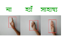

|
I am an M.Sc(Thesis) student in Computer Science and Engineering (CSE) at Shahjalal University of Science and Technology (SUST). My advisor is Mohammad Shahidur Rahman.
I also received my B.Sc.(Engineering) in Computer Science and Engineering (CSE) from North East University Bangladesh (NEUB). My undergrad thesis supervisor was Muhammad Mahir Hasan Chowdhury.
Email | GitHub | Google Scholar | LinkedIn | CV
jasminjahanpuspo AT {gmail.com}
|

|
News
|
Publications |
Journal |

|
TransembleNet: Enhancing vector mosquito species classification through transfer learning-based ensemble model. Abdullah Al Maruf, Md. Mahmudul Haque, Rownuk Ara Rumy, Jasmin Jahan Puspo, Dr. Zeyar Aung. Plos One 2025 paper / project page |
Conference |
|
BengaliTaka: A Comparative Analysis of Transformer and CNNs on Bangladeshi Currency Recognition. Jasmin Jahan Puspo, M. Shahidur Rahman QPAIN 2025 project page |
|
|
SkinNet: An EnsembleNet Technique to Detect Skin Cancer Using Pre-Trained Models. Jasmin Jahan Puspo, Muhammad Mahir Hasan Chowdhury ECCE 2025 paper / project page |
|
|
A Novel Approach to Classify Breast Cancer Using Transfer Learning. Jasmin Jahan Puspo ICCIT 2024 paper / project page |
Academic Thesis |
|
One Stage Detection, Segmentation, Shape, and Stage Classification in Digital Mammography. Jasmin Jahan Puspo, Muhammad Mahir Hasan Chowdhury. Undergraduate Thesis, NEUB|2021 project page |
Personal Dataset Collection |

|
Bengali Taka [Kaggle] - 397 high-resolution images (2408x1496) captured via mobile device, including six categories (10, 20, 50, 100, 500, and 1000 Taka denominations), size at 66 MB. |
|  |
Bangla Sign Language [Kaggle] - 30 files (224*224) captured via web camera, including three categories (সাহায্য, হ্যাঁ, না). |